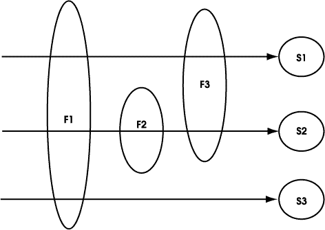

Filtros y Wrappers
Hasta ahora hemos visto la forma en la que los servlets nos permiten encapsular el mecanismo de petición/respuesta. Se identifica al servlet como un recurso dentro del sitio web, y cuando desde el cliente solicitamos dicho recurso, se ejecutará el código que hayamos definido dentro del método de servicio del servlet.
La limitación de los servlets es justamente esa, que un servlet se invocará sólo cuando solicitemos dicho servlet desde el cliente. Pero, ¿y si queremos procesar cualquier petición que se haga a cierta parte o toda nuestra aplicación web?
Si sólo contamos con servlets, para solucionar esto podríamos optar por alguna de las siguientes opciones por ejemplo:
- Crear un servlet central que invocaremos siempre desde el cliente pasándole como parámetro el recurso que deseamos obtener. Tiene el inconveniente de que no es transparente para desarrollador del contenido de nuestra aplicación web, ya que deberá definir todos los enlaces del sitio para que vayan al servlet.
- Introducir al comienzo de todos los servlets de nuestra aplicación una llamada a cierta función que haga el procesamiento que queremos realizar. Esto no nos serviría para el contenido estático de la aplicación web. Además tampoco es transparente ya que el desarrollador de los servlets deberá realizar una llamada a este código. Otro inconveniente es que estaremos repitiendo código común en varios elementos, lo cual va en contra de la modularidad.
- Configurar el servidor web (si nos lo permite) para que cualquier petición de recurso sea redirigida a un servlet que la procese. Esta sería la solución más apropiada, pero tendremos el problema de que si el servlet internamente quiere hacer la petición del recurso al servidor, volverá a redireccionarlo a si mismo, por lo que podemos entrar en un bucle infinito. Por lo tanto, surgirán problemas con la identificación de los recursos.
Como vemos, por ahora este problema no tiene ninguna solución totalmente satisfactoria. Para ello, a partir de la versión 2.3 de servlets, aparecen los denominados filtros.
¿Qué es un filtro?
Un filtro es un componente que intercepta cualquier petición que se realice a un determinado grupo de recursos de nuestra aplicación web, y la respuesta que se vaya a devolver al cliente por parte del servidor.
Normalmente los filtros no generarán por si mismos la respuesta, como es el caso de los servlets, sino que simplemente la modificarán si es necesario. Podrán modificar tanto la petición HTTP, como la respuesta o las cabeceras de la misma.
Una ventaja importante de los filtros es que nos ayudarán a modularizar la aplicación, ya que son componentes independientes que actuarán sobre cualquier grupo de recursos, no teniendo dichos recursos porque conocer la existencia de estos filtros. De esta forma este filtrado de las peticiones y respuestas a nuestro servidor se realiza de un forma totalmente transparente en todos los niveles, tanto para el cliente como para los desarrolladores del contenido del sitio web (servlets, JSPs, páginas estática, y cualquier otro recurso).
Esta independencia implica por lo tanto que los filtros podrán ser reutilizados para cualquier elemento del sitio web, sin necesidad de incluir código común en todos los elementos que queramos que realicen dicha funcionalidad.
Funcionalidades de los filtros
Un filtro podrá acceder a la petición de un determinado recurso antes de que dicho recurso sea invocado, momento en el que podremos procesar o modificar dicha petición.
Una vez se ha invocado la petición, podremos procesar o modificar la respuesta que nos ha devuelto el servidor.
Además, podremos tener múltiples filtros actuando sobre determinados grupos de recursos. De esta forma un recurso podrá no ser filtrado, o ser filtrado por uno o más filtros. Cuando tenemos varios filtros, se organizarán en forma de cadena en el orden que nosotros especifiquemos, y cada uno procesará el resultado del anterior.
Aplicaciones de los filtros
Hemos descrito lo que es un filtro, pero entenderemos más claramente los filtros si vemos una serie de posibles aplicaciones que les podemos dar:
- Autentificación de usuarios: Podemos definir un filtro que actúe sobre cierta zona restringida de nuestra aplicación web. Si el usuario está registrado el filtro dejará ver el contenido tal cual, si no le redirigirá a la página con el formulario de registro de usuarios.
- Transformación con hojas XSL-T: Si tenemos una serie de páginas escritas en XML, y una serie de hojas de transformación XSL-T para generar código para distintos navegadores, podremos definir un filtro que actúe sobre el conjunto de documentos XML, y aplique una transformación según el tipo de navegador que hizo la petición. Devolverá al cliente la respuesta transformada, adaptada al navegador adecuado.
- Transformación de imágenes: Igual que transformamos documentos XML, también podemos aplicar los filtros a determinados formatos de imágenes, y transformar dichas imágenes dinámicamente a un formato más adecuado.
- Encriptación de datos: Podemos utilizar un filtro para que encripte la salida de cualquier recurso al que se acceda. El cliente deberá ser capaz de desencriptarlo para poder visualizar dicho contenido.
- Compresión de datos: De forma similar al punto anterior, podemos comprimir los datos que genera el servidor.
- Registro de acceso a recursos: Se puede contabilizar mediante un filtro la cantidad de accesos a cada recurso de nuestra web. Como todas las peticiones pasan a través de él, simplemente tendrá que incrementar la cantidad de visitas al recurso que se solicite en cada momento.
- Log de accesos: Podemos también elaborar un fichero de log de accesos a la web, para conocer los datos de todos los accesos que se han realizado.
Configuración de un filtro
Para que un filtro intercepte las peticiones a determinados recursos, deberemos configurar la aplicación web para que esto sea así. La forma de configurar los filtros es similar a la configuración de los servlets.
Los filtros, al igual que los servlets, serán clases Java que definamos, y que tendremos normalmente en el directorio WEB-INF/classes de nuestra aplicación web, o subdirectorios de este si está en algún subpaquete. La configuración de los filtros deberá establecerse en el fichero de configuración de nuestra aplicación web, WEB-INF/web.xml.
Es importante recordar que en este fichero de configuración, por ser un lenguaje definido mediante un DTD en XML, se debe respetar el orden en el que aparecen los distintos elementos. Los elementos para la configuración de filtros deben ir tras los elementos context-param, y antes de listener y servlet.
Primero deberemos declarar los filtros incluidos en nuestra aplicación web. Para ello deberemos utilizar el elemento filter que se define de la siguiente forma en el DTD:
<!ELEMENT filter (icon?, filter-name, display-name?, description?, filter-class, init-param*)>
Un ejemplo de uso de este elemento en el fichero de configuración web.xml es el siguiente:
<filter> <filter-name>Filtro de ejemplo</filter-name> <filter-class>FiltroEjemplo</filter-class> <init-param> <param-name>fichero_log</param-name> <param-value>log.txt</param-name> </init-param> </filter>
Es muy similar a la forma de declarar un servlet. Asignamos un nombre al filtro, que será asociado a la clase en la que está implementado dicho filtro. En este caso la clase es FiltroEjemplo, por lo que tendremos que tener el fichero FiltroEjemplo.class en el directorio WEB-INF/classes de nuestra aplicación.
A continuación podemos declarar una serie de parámetros de entrada para el filtro, de forma que para variar estos datos no tengamos que modificar y recompilar la clase del filtro, sino que simplemente deberemos modificar el valor del parámetro en este fichero de configuración. Podremos no tener ningún parámetro, tener uno, o tantos como queramos.
Una vez declarados los filtros deberemos mapearlos a los recursos. Las peticiones que se hagan al servidor a estos recursos, serán interceptadas por nuestro filtro. Podemos mapear filtros a recursos de distintas formas, con la etiqueta filter-mapping que se define de la siguiente forma en el DTD:
<!ELEMENT filter-mapping (filter-name, (url-pattern | servletname))>
Ejemplos de utilización de las dos formas posibles de mapeado son los siguientes:
<filter-mapping> <filter-name>Filtro de ejemplo</filter-name> <servlet-name>Servlet interceptado</servlet-name> </filter-mapping> <filter-mapping> <filter-name>Filtro de ejemplo</filter-name> <url-pattern>/*</url-pattern> </filter-mapping>
La primera forma nos sirve para mapearlo a un servlet, dado el nombre del servlet al que lo vamos a asociar. La segunda forma asocia el filtro a todos los elementos cuya URL cumpla el patrón dado:
/* Se asocia con todos los elementos de nuestra aplicación web.
/zona_restringida/* Se asocia con todos los elementos en el directorio de nombre
zona_restringida, y con los de sus subdirectorios.
/web/* Se asocia con todos los elementos en el directorio de nombre
web, y con los de sus subdirectorios.
...
Podemos asociar varios filtros a un mismo recurso, si dicho recurso aparece mapeado para varios filtros. En este caso tendremos una cadena de varios filtros cuando se produzca una petición a este recurso.

Implementación básica de un filtro
Los filtros se definen mediante la interfaz Filter, contenida en el paquete javax.servlet. Por lo tanto, para crear un filtro deberemos crear una clase que implemente dicha interfaz:
import javax.servlet.*;
import javax.servlet.http.*;
class MiFiltro implements Filter {
FilterConfig config;
Dentro de este clase, el método básico que deberemos implementar será el método doFilter, al que se llamará cada vez que dicho filtro intercepte una petición a recursos:
public void doFilter(ServletRequest request,
ServletResponse response, FilterChain chain)
throws IOException, ServletException {
...
Vemos que a este método se le pasa como parámetro la petición y la respuesta, de forma que podamos procesarlas o modificarlas según la funcionalidad que queramos que implemente el filtro. Hemos de fijarnos que toma una petición y respuesta genérica, no se limita únicamente a peticiones y respuestas HTTP.
Además también se nos proporciona un objeto que representa la cadena de filtros. Con él podremos pasar la petición y la respuesta interceptadas al siguiente filtro de la cadena, o bien al recurso destino en caso de que ya no hubiese más filtros. Esto lo haremos con una llamada a:
... chain.doFilter(request, response); ... // En este punto el servidor ya habrá producido //la respuesta en response }
Justo después de haber llamado a este método, ya se habrá producido la respuesta, ya que con él estamos indicando que se ejecuten todos los filtros que siguen al nuestro en la cadena, y en último lugar el recurso solicitado.
Por lo tanto, todas las modificaciones que queramos hacer en la petición que va a llegar al recurso las deberemos hacer antes de la llamada a este método, mientras que todo procesamiento que queramos hacer de la respuesta se hará después de esta llamada, que será cuando se haya generado.
También podemos hacer que no se llegue a llamar, si queremos que nuestro filtro de la respuesta por si solo, sin acceder al recurso que se había pedido. Esto lo haremos por ejemplo cuando queramos prohibir el acceso a un recurso.
Otros métodos que debemos definir en un filtro son:
public void init(FilterConfig config) throws ServletException {
// Código de inicialización del filtro
this.config = config;
...
}
public void destroy() {
// Libera recursos del filtro
config = null;
...
}
...
}
Que serán llamados en la inicialización y en la destrucción de este componente respectivamente.
Acceso al contexto
Acabamos de ver que cuando se inicializa el filtro se llama a su método init. En esta llamada se proporciona un objeto FilterConfig que contiene información sobre los parámetros del filtro, que vimos en el apartado de configuración, y además nos permite acceder a la información global de contexto.
Para leer los parámetros del filtro especificados en el descriptor de despliegue de la aplicación web (fichero web.xml en Tomcat como hemos visto), este objeto proporciona el siguiente método:
String valor = config.getInitParameter(nombre_param);
Esta llamada nos devolverá una cadena con el valor del parámetro, o null en el caso de que el parámetro indicado no existiese. Si queremos obtener la lista de parámetros definidos en el descriptor de despliegue, podemos usar el siguiente método:
Enumeration parametros = config.getInitParameterNames();
Con esto obtendremos una enumeración de todos los nombres de parámetros definidos.
Este objeto también nos permite obtener el nombre del filtro, que se habrá definido en el descriptor de despliegue, con el método:
String nombre = config.getFilterName();
Este objeto además nos permitirá acceder al objeto de contexto global del contenedor de servlets, mediante el método:
ServletContext context = config.getServletContext();
Obtenemos este objeto con el cual podremos acceder a los atributos globales definidos en nuestra aplicación web, y además nos proporciona una serie de métodos que nos permitirán realizar en filtros las mismas operaciones que podíamos hacer en los servlets.
Será importante acceder a este objeto desde los filtros, ya que si queremos realizar redirecciones, o acceso a recursos estáticos por ejemplo, necesitaremos contar con dicho objeto.
Ciclo de vida de un filtro
Justo después del despliegue de la aplicación web, y antes de que se produzca cualquier petición a un recurso, el contenedor localizará los filtros que deben ser aplicados a cada recurso. Instanciará los filtros que hayamos declarado, y tras ello llamará al método init de cada filtro para inicializarlo.
Si hacemos que este método init lance una excepción UnavailableExeption estaremos indicando que el filtro no puede funcionar correctamente. Esta excepción tiene un método isPermament que indicará si el fallo es permanente o puede recuperarse pasado un tiempo. De no ser permanente el contenedor intentará volver a instanciar el filtro más adelante. Podemos establecer en la excepción un tiempo estimado que puede tardar en estar disponible, para informar al contenedor de cuando puede volver a intentar instanciarlo.
Al método init se le proporcionará el objeto FilterConfig, con la información de los parámetros y nombre del filtro obtenidos del descriptor de despliegue, además de una referencia al objeto ServletContext de la aplicación web, como hemos visto en el apartado anterior.
Una vez terminada la fase de inicialización, el servidor ya podrá empezar a recibir peticiones. Cuando se produzca una petición, el contenedor localizará el primer filtro asociado a dicho recurso, y llamará a su método doFilter proporcionando los objetos ServletRequest, ServletResponse, y FilterChain. Una vez hecho esto será responsabilidad de nuestro filtro tratar estos objetos, y decidir si pasar el procesamiento al siguiente filtro de la cadena.
Cuando lleguemos al ultimo filtro de la cadena, al llamar a doChain se invocará directamente el recurso que se solicitaba en la petición.
Si durante doFilter lanzamos una excepción UnavailableException, el contenedor no intentará seguir procesando la cadena de filtros. Si hemos indicado que es no permanente, tras un rato reintentará procesar la cadena entera.
Antes de poder hacer que el filtro deje de estar en servicio, llamará a su método destroy para que libere los recursos que sea necesario.
Wrappers
Hasta ahora hemos visto como interceptar la petición que se realiza a un determinado recurso de nuestra web mediante filtros, pero, ¿y si queremos interceptar la respuesta que nos devuelve el servidor para analizarla o modificarla?
Cuando desde nuestro filtro pasemos el procesamiento de la petición al siguiente elemento de la cadena (doFilter), delegaremos en este siguiente elemento el procesamiento de la petición y la generación de la respuesta. Supongamos que este elemento es el recurso final que se había solicitado. En este caso el contenido de este recurso será escrito en el objeto respuesta, lo cual producirá que dicho contenido sea devuelto al cliente.
Sin embargo, nosotros no queremos que sea devuelto directamente al cliente, sino que queremos procesarla previamente en nuestro filtro antes de devolverla. Con este objeto ServletResponse (HttpServletResponse) no podremos hacer esto, ya que cuando se escribe en él lo que se hace es devolver la respuesta al cliente, y una vez escrita no podemos acceder nuevamente a ella ni modificarla.
La solución a nuestro problema es sustituir el objeto respuesta que proporcionamos al siguiente elemento de la cadena por un objeto de respuesta creado por nosotros.
¿Qué es un wrapper?
Un wrapper es un objeto que envuelve al objeto original, de forma que no se acceda directamente al objeto original sino al wrapper. El wrapper implementará la misma interfaz del objeto al que envuelve, de forma que externamente se trabajará con él de la misma forma, por lo que podemos sustituir el original por el wrapper siendo esto transparente a los sucesivos elementos que vayan a manipular este objeto.
Cuando se llame a un método del wrapper podrá, o bien redirigir la llamada al correspondiente método del objeto original al que envuelve, o bien tratar por si mismo la llamada a dicho método. De esta forma, podremos redefinir el comportamiento que tendrán determinadas operaciones.
Encontramos para nuestro fin wrappers para la petición y la respuesta: ServletRequestWrapper (HttpServletRequestWrapper) y ServletResponseWrapper (HttpServletResponseWrapper). Con ellos podremos crear implementaciones propias del objeto petición y respuesta que envuelvan a los originales, pudiendo de esta forma redefinir el comportamiento de determinadas operaciones.
Nos centraremos en el wrapper de la respuesta. Con él podemos evitar que la respuesta se envie directamente al cliente. En lugar de esto, cuando se escriba la salida en este objeto wrapper de la respuesta podemos hacer que guarde dicha salida en un buffer interno. Una vez procesados todos los elementos de la cadena que están después de nuestro filtro (tras llamar a doFilter), se habrá escrito la salida generada en el buffer del wrapper. En este momento podemos analizar esta salida, modificarla si es necesario, y enviarla a través del objeto respuesta original.
Implementación de un wrapper
Para implementar un wrapper deberemos crearnos una subclase de la clase del wrapper adecuado para nuestro caso (petición o respuesta), y redefinir en esta subclase las operaciones cuyo comportamiento queramos cambiar. El funcionamiento por defecto de las operaciones que no redefinamos será redirigir la petición al método correspondiente del objeto (petición o respuesta) original.
Vamos a ver esto con un ejemplo de implementación de un wrapper de la respuesta que guarda en un buffer la respuesta generada por el servidor, para poder ser procesada por nuestro filtro.
Puesto que queremos envolver la respuesta, tendremos que crearnos una subclase de ServletResponseWrapper:
public class GenericResponseWrapper extends HttpServletResponseWrapper {
Dentro de esta clase deberemos tener el buffer donde vayamos a escribir la salida. Dado que en la salida se puede escribir tanto como flujo de bytes como de caractéres, para que sea más genérico convendrá crear el buffer como array de bytes, de forma que se pueda escribir en él de las dos formas:
private ByteArrayOutputStream output;
En el constructor de la clase simplemente deberemos proporcionar el objeto respuesta original (al cual estaremos envolviendo). Lo que hacemos aquí es utilizar el constructor de la superclase proporcionándole la respuesta original, de forma que se encargue de redirigir a él las operaciones predeterminadas. Además deberemos crear nuestro buffer de bytes donde se escribirá la respuesta:
public GenericResponseWrapper(HttpServletResponse response) {
super(response);
output = new ByteArrayOutputStream();
}
Proporcionaremos además un método para obtener los datos escritos en el buffer:
public byte[] getData() {
rreturn output.toByteArray();
}
Cuando alguien quiera devolver una respuesta al cliente lo que hará será obtener el flujo de salida del objeto respuesta y escribir en él. Por defecto este flujo envia los datos al cliente. Sin embargo podemos evitar que esto ocurra haciendo que los flujos que devuelva sirvan para escribir en el buffer, y no para enviar la respuesta al cliente. Se puede enviar la respuesta de dos formas: mediante un flujo de bytes (getOutputStream), o mediante un flujo de carácteres (getWriter), por lo que deberemos redefinir ambos métodos.
public ServletOutputStream getOutputStream() {
return new FilterServletOutputStream(output);
}
public PrintWriter getWriter() {
return new PrintWriter(getOutputStream(), true);
}
}
En el caso del flujo de bytes, deberemos devolverlo como un ServletOutputStream. Por lo tanto tendremos que crearnos un tipo propio de ServletOutputStream que escriba en nuestro buffer:
public class FilterServletOutputStream extends ServletOutputStream {
private DataOutputStream stream;
public FilterServletOutputStream(OutputStream output) {
stream = new DataOutputStream(output);
}
public void write(int b) throws IOException {
stream.write(b);
}
public void write(byte[] b) throws IOException {
stream.write(b);
}
public void write(byte[] b, int off, int len) throws IOException {
stream.write(b, off, len);
}
}
Este será el flujo que utilicemos para escribir la respuesta en forma de bytes en nuestro buffer interno.
Aunque a primera vista parezca compleja la creación de dicho wrapper, tiene la ventaja de ser reutilizable para cualquier aplicación en la que necesitemos interceptar la respuesta generada por el servidor.
Utilización de un wrapper
Para utilizar el wrapper que hemos creado, deberemos instanciarlo a partir del objeto de respuesta original que le ha sido proporcionado a nuestro filtro. Esto lo haremos antes de que se haya generado el contenido del recurso solicitado, es decir, antes de llamar a doFilter.
public void doFilter(ServletRequest request,
ServletResponse response, FilterChain chain)
{
...
GenericResponseWrapper wrapper = new GenericReponseWrapper(response);
Una vez hemos creado nuestro propio objeto respuesta que envuelve a la respuesta original, podemos utilizarlo para que el servidor escriba el contenido del recurso solicitado en él. Para esto realizaremos la llamada a doFilter proporcionando como respuesta este wrapper que hemos creado:
chain.doFilter(request, wrapper);
Una vez ejecutado este método se habrá generado la respuesta en el objeto de respuesta proporcionado, en este caso habrá sido en nuestro wrapper. Por lo tanto podemos obtener y procesar la respuesta según la función de nuestro filtro:
byte [] datos = wrapper.getData(); ... // Procesar datos segun la funcion del filtro
Por último, para que el cliente pueda ver esta respuesta, deberemos escribirla en el objeto respuesta original:
OutputStream out = response.getOutputStream(); out.write(datos); out.close(); }
Con esto vemos que habremos podido procesar la salida generada en nuestro filtro, y enviarla al cliente para que pueda ser visualizada correctamente.
Ejemplos de filtros
Vamos a ver a continuación una serie de ejemplos de usos comunes de los filtros, y cómo implementaríamos dichos filtros, utilizando distintos elementos que hemos visto durante el curso.
Acceso restringido
Una primera aplicación sencilla de los filtros es prohibir el acceso a cierta parte de nuestra web. Cuando un usuario intente acceder a dicha parte, se comprobará si este usuario está registrado. Si lo está se le dejará pasar normalmente, pero si no se prohibirá el acceso, redireccionando a la página de login de usuarios.
public class RestringirAcceso implements Filter {
Cuando se invoca el filtro querrá decir que un usuario intenta acceder a la zona restringida.
public void doFilter(ServletRequest request,
ServletResponse response, FilterChain chain)
{
// Se intenta acceder a la zona restringida
Comprobamos si el usuario está registrado en el servidor. Para ello utilizamos la información de sesión, donde almacenaremos el login del usuario en caso de estar registrado.
// Solo podemos comprobar la sesión
// en el caso de tener una petición HTTP
if(request instanceof HttpServletRequest &&
response instanceof HttpServletResponse)
{
HttpServletRequest http_request =
(HttpServletRequest)request;
HttpServletResponse http_response =
(HttpServletResponse)response;
// * Comprobamos si el usuario se ha registrado *
// En nuestra aplicación si el usuario
// se ha registrado habremos establecido
// el atributo usuario de la sesion al
// nombre del usuario, si no será null.
if(http_request.getSession().getAttribute("usuario")!=null)
Si hay un login almacenado, procesamos la petición de forma normal.
{
// Continuamos de forma normal con la petición
chain.doFilter(request, response);
}
Si no, redireccionamos a la página de login, para que el usuario se registre.
else
{
// Redireccionamos a la página de login
response.sendRedirect("/ejemplo/login.jsp");
}
} else {
// Si no es una petición HTTP
// simplemente procesamos la petición
chain.doFilter(request, response);
}
}
}
Ranking de páginas más visitadas
Otra posible aplicación es registrar el número de visitas que se hacen a cada página, de forma que podremos obtener un listado de las páginas favoritas de los usuarios dentro de nuestro sitio web. Para ello instalaremos un filtro que intercepte las peticiones a cualquier página. Cada vez que el filtro se invoque, querrá decir que se ha visitado una página. Lo que deberemos hacer en este momento es:
Determinar la dirección de la página que se ha solicitado
public class Ranking implements Filter {
// Objeto que encapsula la conexión a la BD de páginas
BDPaginas bdPaginas = null;
public void doFilter(ServletRequest request,
ServletResponse response, FilterChain chain)
{
// Solo podemos ver el recurso solititado en el
// caso de tener una petición HTTP
if(request instanceof HttpServletRequest)
{
HttpServletRequest http_request =
(HttpServletRequest)request;
// Miramos que recurso está siendo solicitado
String uri = http_request.getRequestURI();
Tendremos una base de datos con una entrada para cada página, donde se contabilizan el número de visitas. Si no existe entrada para la página visitada, la crearemos con una visita.
if(bdPaginas.existePagina(uri)
{
// La página ya esta registrada en la BD
// y solo tenemos que incrementar su contador
bdPaginas.incrementaContador(uri);
}
Si ya existe entrada para esta página en la BD, incrementaremos el número de visitas.
else
{
// La página se está visitando por primera vez
// Debemos registrarla en la BD
// con contador a 1 (1 visita)
bdPaginas.insertaPagina(uri);
}
}
Procesamos la petición de forma normal.
chain.doFilter(request, response);
}
En los métodos init y destroy abriremos y cerraremos respectivamente la conexión con nuestra base de datos. De este forma evitamos tener que estar abriendo y cerrando una conexión para cada petición.
public void init(FilterConfig config) {
bdPaginas = new BDPaginas();
bdPaginas.conectar();
}
public void destroy() {
bdPaginas.cerrar();
}
}
Extracción automática de información
Imaginemos que en el ranking queremos, además de la dirección, registrar el título de la página. A partir de la información de la petición y la respuesta ordinaria no podemos obtener dicha información, ya que se refiere al contenido de la página. Para ello tendremos que utilizar un wrapper, que obtenga la respuesta generada por el servidor, de manera que podamos analizarla y extraer de ella el título de la página.
public class RankingTitulo implements Filter {
// Objeto que encapsula la conexión a la BD de páginas
BDPaginas bdPaginas = null;
public void doFilter(ServletRequest request,
ServletResponse response, FilterChain chain)
{
// Solo podemos ver el recurso solititado en el caso
// de tener una petición HTTP
if(request instanceof HttpServletRequest &&
response instanceof HttpServletResponse)
{
HttpServletRequest http_request =
(HttpServletRequest)request;
HttpServletResponse http_response =
(HttpServletResponse)response;
// Miramos que recurso está siendo solicitado
String uri = http_request.getRequestURI();
if(bdPaginas.existePagina(uri)
{
// La página ya esta registrada en la BD
// y solo tenemos que incrementar su contador
bdPaginas.incrementaContador(uri);
}
Cuando se visite una página por primera vez, para registrarla en la base de datos tendremos que obtener la información del título. Creamos un wrapper, y procesamos la petición utilizando dicho wrapper como objeto respuesta.
else
{
// La página se está visitando por primera vez
// Debemos obtener su titulo para registrarla en la BD
// Envolvemos la respuesta con nuestro wrapper generico
GenericResponseWrapper wrapper =
new GenericResponseWrapper(http_response);
// Procesamos la petición
chain.doFilter(http_request, wrapper);
Una vez hecho esto, tendremos en el wrapper el contenido de la página generado. Podemos obtenerlo y analizarlo, buscando en él la etiqueta <title>.
// En este momento ya diponemos
// de la respuesta en el wrapper
// La analizamos para obtener el
// valor de su etiqueta <title>
byte [] datos = wrapper.getData();
HtmlParser parser = new HtmlParser(datos);
String titulo = parser.getTitle();
Una vez obtenido el título, podremos registrar en la base de datos la entrada de la página.
// Ahora podemos registrar ya la página con sus datos
bdPaginas.insertaPagina(uri, titulo);
Por último, tendremos que hacer que la respuesta del wrapper pase al cliente, enviándola al objeto respuesta original.
// Por último, debemos devolver
// la respuesta al cliente de forma
// que pueda visualizar el recurso solicitado
OutputStream out = response.getOutputStream();
out.write(datos);
out.close();
}
} else {
// Si no es HTTP procesamos la petición de forma ordinaria
chain.doFilter(request, response);
}
}
public void init(FilterConfig config) {
bdPaginas = new BDPaginas();
bdPaginas.conectar();
}
public void destroy() {
bdPaginas.cerrar();
}
}